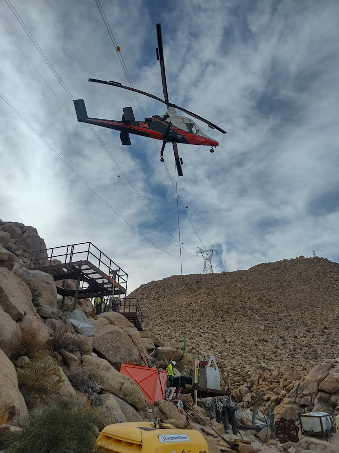
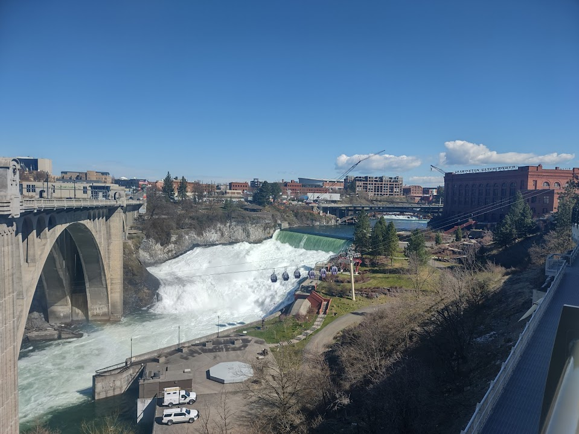

An engagement photo of Shelby and I in front of the Spokane Convention CenterThis photo was taken in death valley, CA just after Christmas of 2021.
Shelby and I have tried to hit a bunch of the national parks, having seen 20 so far.

From my previous job, a K-max supporting construction efforts.This is Mt. Fitzroy, in Argentina. I have been able to do some significant traveling,
including much of central america, some of south america, east asia, and the english
isles(Ireland, england). So many more places to see!

This is my hometown, Spokane WA!